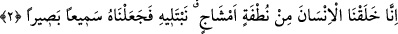

kişiye âdetâ; “evet insanoğlunun üzerinden anılmaya değer hiç bir şey olmadığı şu
konuşulan zamana yakın bir zaman geçmiştir” şeklinde bir itirâf yaptırmak istiyor. Bu
kişiye şöyle denmek isteniyor: “Bir zamanlar anılmaya değer hiç bir şey değilken daha
sonra onu yaratan varlığın kendisini -öldükten sonra bir kez daha- diriltmesi ve
kendisine hayat vermesi nasıl olur da imkânsız olur?!”
Kâşânî üzerinde durduğumuz bu âyeti şöyle anlar: İnsanoğlu, Allah’ın ilminde
anılmaya değer bir şey idi. Hattâ “asıl itibariyle” anılmaya değer bir şeydi. Çünkü
insanın ruhu kadimdir. Fakat aynı insan, yaşayan insanlar ve varlıklar arasında anılmaya
değer bir şey değildi. Çünkü o, gayb âleminde bulunuyor ve şehâdet âleminde bulunan
kimseleri hissetmiyordu.
et-Tevilâtü’n-necmiyye’de şu satırları görüyoruz: Bil ki, insanoğlunun bir ilmî ve
gaybî sûreti, bir de aynî ve görünen sûreti vardır. İnsan bu iki sûret ve biçimiyle Allah
katında ezel ve ebedde anılmaya değer olmuştur. Allah’ın ilminden zerre mikdârı bir
şey gizli kalmaz. Çünkü O’nun ilmi ezelî ve ebedî olup, eşya henüz yokluktan varlık
âlemine çıkmadan, dünya sahnesinde ve varlık âleminde yerini almadan bütün eşyayı
kuşatmıştır. Bütün yaratıklar “yokluk sessizliği”nde “yok” iken O yaratıkların tümünü
yaratmıştır. O’nun kendine âid olan ilmi, eşyayı aynı ile, zâtı ile bilmesini gerektirir.
Çünkü eşyâ O’nun isim ve sıfatlarının dışa vuran görüntüleridir.
Buraya kadar aktardıklarımızdan sonra âyet-i kerîmeye mânâ vermek gerekirse:
“İnsanın üzerinden Hakk’a nisbetle -unutulmuş bir hâlde bulunduğu- belli bir zaman
geçmiş değildir. İnsanoğlu kendi sûretinde yaratılmış iken, Allah’a nisbetle mevcûd ve
O’nun katında müşâhede ediliyor iken, nasıl olur da Allah açısından insanın anılmaya
değer bir şey olmadığı ve unutulmuş bir hâlde bulunduğu bir zaman dilimi geçebilir?”
Âyetin başında yer alan “hel” -mârifet ilminden ve hikmet-i ilâhîden nasibi
olmayanların söylediklerinin aksine- istifhâm-ı inkâridir.
İmam Cafer Sâdık (rh.) bu âyet-i kerîmeyi şöyle tefsir etmiştir: Ey insanoğlu!
Allah’ın seni anmadığı, zikretmediği bir vakit senin üzerinden acaba hiç geçmiş midir?
2. Gerçek şu ki, biz insanı katışık bir nutfeden (erkek ve kadının dölünden)
yarattık; onu imtihan edelim diye, kendisini işitir ve görür kıldık.
“Gerçek şu ki, biz insanı”, insanın, bedenini “katışık bir nutfeden yarattık.” Bu
âyet-i kerîmede “insan” kelimesinin açıkça ifâde edilmesi, yerine zamir kullanılmaması,
“ikrar”ı
artırmak
içindir.
Nutfeden
yaratılan
insanoğlu
kırkıncı
gününde
“aleka/aşılanmış yumurta” ve sekseninci gününde “mudğa/bir çiğnem et” hâline gelir.
Yüz yirminci günde ise ruh üflenir. Nitekim babaları Hz. Âdem’in çamurdan yaratılışı
da aynı süreçten geçmiştir. Allah Teâlâ Âdem’i Mekke ile Tâif arasına bırakmış ve